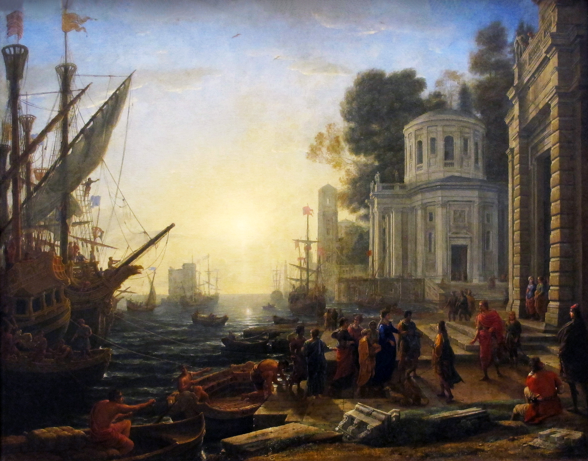

The Disembarkation of Cleopatra at Tarsus
Artist: Claude Lorrain (1642) — Baroque Classical Landscape
Artist Context & Historical Analysis: French landscape innovator Claude Lorrain captures the legendary arrival of Egyptian Queen Cleopatra in Asia Minor to meet Mark Antony. Lorrain uses low horizon lines, delicate atmospheric hazes, and golden solar illumination to transform a historic encounter into an idyllic, idyllic seascape. His pioneering approach to rendering natural sunlight reflecting off harbor ripples established foundational aesthetic ideals for 18th and 19th-century Romantic landscape painters throughout Europe.